Caso de Estudio Enfermedades Hepáticas
Posted on sáb. 02 Diciembre 2023 in Caso de Estudio
Introducción
Para la resolución de este problema se seguirán los pasos del proceso CRISP-DM:
- Comprensión del negocio
- Comprensión de los datos
- Preparación de los datos
- Modelado
- Evaluación
- Despliegue (N/A)
Contexto
Análisis del problema planteado
El incremento en la mortalidad debido a la cirrosis hepática está directamente vinculado al aumento en el consumo de alcohol, la presencia crónica de hepatitis y la enfermedad hepática relacionada con la obesidad. A pesar de su impacto letal, las enfermedades hepáticas no afectan a todas las subpoblaciones por igual. La detección temprana juega un papel crucial en los resultados para los pacientes, pero parece existir un sesgo hacia las pacientes femeninas en cuanto al diagnóstico precoz de estas patologías. Este análisis se basa en un conjunto de datos que comprende 584 registros de pacientes recolectados en el noreste de Andhra Pradesh, India. La tarea principal es predecir si un paciente padece enfermedad hepática a partir de información sobre diversos marcadores bioquímicos, incluyendo albúmina y otras enzimas esenciales para el metabolismo.
Comprensión de los datos
Este grupo de datos en particular contiene información de 416 pacientes con enfermedad hepática y 167 pacientes sin ella, recopilados en el noreste de Andhra Pradesh, India.
Los datos del conjunto consisten en información médica, como datos demográficos (edad y género) y mediciones de laboratorio relacionadas con la salud del paciente. Además, hay una variable objetivo que clasifica a los pacientes en dos grupos. De las variables, 9 son numéricas, 1 es binaria y la variable objetivo también es binaria.
Atributos tomados:
- Edad: Representa la edad del paciente y se mide en años, siendo un número entero. Para pacientes mayores de 89 años, se registra como "90 años".
- Gender: Indica el sexo del paciente y es una variable binaria, típicamente masculino o femenino.
- TB (Bilirrubina Total): Indica el nivel total de bilirrubina en el paciente, una variable continua.
- DB (Bilirrubina Directa): Refleja el nivel de bilirrubina directa en el paciente, otra variable continua.
- Alkphos (Fosfatasa Alcalina): Expresa la cantidad de fosfatasa alcalina en el paciente, un número entero.
- Sgpt (Alamina Aminotransferasa): Representa la cantidad de alanina aminotransferasa en el paciente, también es una variable numérica sin unidad específica.
- Sgot (Aspartato Aminotransferasa): Indica la cantidad de aspartato aminotransferasa en el paciente, una variable numérica sin unidad específica.
- TP (Proteínas Totales): Muestra la cantidad total de proteínas en el paciente, una variable continua.
- ALB (Albúmina): Indica la cantidad de albúmina en el paciente, variable continua.
- A/G Ratio (Relación Albúmina/Globulina): Representa la relación entre albúmina y globulina en el paciente, una variable continua.
- Selector: Es la variable objetivo y es binaria. "2" significa ausencia de enfermedad hepática y "1" indica la presencia de la enfermedad.
Preparación de los datos
Missing Values
La única variable que presenta missing values es la variable numérica “A/G Ratio”. Únicamente tiene 4 valores faltantes por lo que simplemente se imputarán los valores con la media de la columna para mantener la distribución y no afectar la varianza.
Otra alternativa más eficiente pero compleja es predecir cual sería un valor de reemplazo probable en base a los demás atributos utilizando un algoritmo de regresión para atributos numéricos y clasificación para categóricos.
Outliers
Algunos atributos numéricos tienen valores que aparentan ser outliers ya que se encuentran separados de la distribución de la variable. Los atributos son los siguientes, y se filtraran de la siguiente manera:
- tb (<= 30)
- sgpt (<= 500)
- sgot (<= 650)
-
ag_ratio (<= 2)
Por ejemplo la variable ag_ratio:
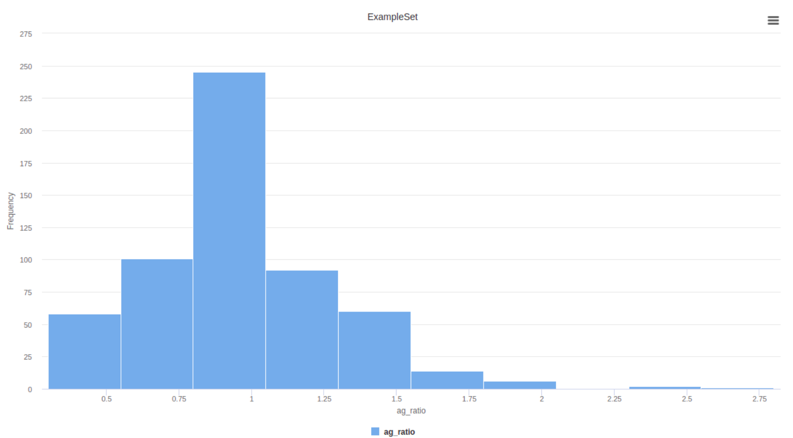
- Encoding
Únicamente se tiene una variable categórica binomial (gender), debe ser convertida a numérica para que todos los algoritmos de clasificación a utilizar la puedan soportar.
- Male=0
- Female=1
Normalización
Se aplica estandarización de los datos numéricos para que todos tengan la misma escala, y varianza.
Transformaciones
Una posible mejora es aplicar una transformación a la variables que no sigan una distribución normal (tb, db, alkphos, sgpt, sgot), porque muchos algoritmos tienen una mejor performance cuando la siguen. Por ejemplo, se puede aplicar el logaritmo, raíz cuadrada, o la transformación box-cox entre otras. No se aplica por falta de tiempo.
¿cómo es la distribución de la enfermedad en función de otros atributos relevantes?
Las personas que no tienen la enfermedad presentan un sgot menor a 300:
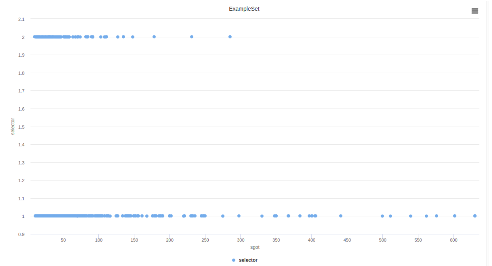
Los hombres (gender=0) tienden a padecer más la enfermedad.
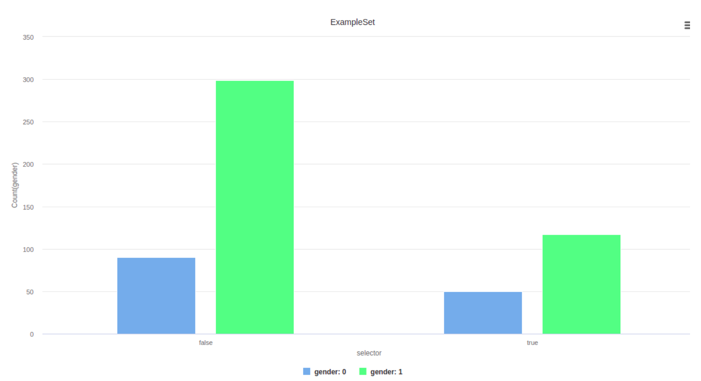
Describe las características de los atributos (físicas, estadísticas, correlaciones, etc.).
Los atributos age, tp, alb y ag_ratio tiene una distribucion normal, con escalas diferentes por lo que los valores deben ser normalizados.
Los demás atributos numéricos no tienen distribuciones normales, por lo que sería una mejora aplicar transformaciones para acercarla.
Ejemplo de distribución no normal de la variable “tb”:
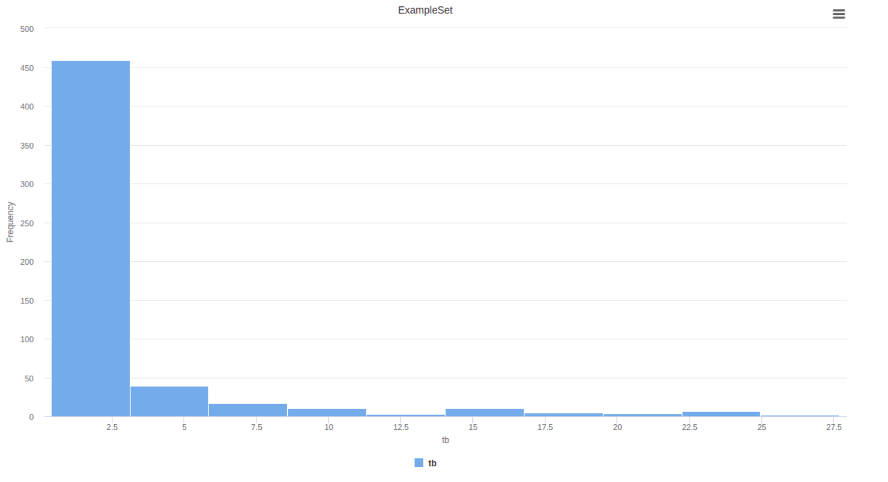
¿Cuál es el verdadero significado de cada atributo?
El verdadero significado de cada atributo fue explicado más arriba en el documento.
¿cuáles son los procedimientos y dificultades para obtener datos correctos de estos atributos?
Muchos de estos atributos fueron tomados utilizando instrumentos de medición, como por ejemplo tests, los cuales tienen un error de medición asociado, por lo que los datos no son 100% certeros.
Modelado
Se utilizará los siguientes modelos: Regresión Logistica, Random Forest y KNN. Debido a que estos son los más adecuados para clasificación binomial. Además, presentan buena performance cuando los atributos tienen distribución normal, como lo hacen una parte de los atributos.
Regresión Logistica
El primer modelo a considerar es Regresión Logística porque es adecuado para analizar relaciones lineales entre variables y es ampliamente utilizado en problemas de clasificación. En este caso de estudio, se elige debido a su capacidad para predecir probabilidades y clasificar datos en diferentes categorías. Además, la Regresión Logística proporciona resultados interpretables, lo que facilita la comprensión de cómo cada variable influye en las predicciones.
Random Forest
Se decide utilizar Random Forest porque ofrece una capacidad optima para manejar datasets complejos con múltiples atributos. En este caso de estudio, la robustez inherente de Random Forest contra el overfitting y su habilidad para trabajar con datos de alta dimensionalidad. Además, su capacidad para evaluar la importancia relativa de las características permite comprender mejor la contribución de cada atributo en las predicciones. Esta técnica, al emplear múltiples árboles de decisión, reduce la variabilidad y mejora la capacidad de generalización del modelo, aspectos cruciales en este contexto de análisis de enfermedad hepática donde se busca una predicción precisa y sólida.
KNN (K Nearest Neighbors)
KNN es idóneo para abordar un escenario donde la naturaleza y distribución de los datos son complejas o no lineales. Al aplicar KNN, se prioriza la flexibilidad del modelo, lo que resulta beneficioso cuando se trabaja con conjuntos de datos cuya estructura no es fácilmente definida por modelos paramétricos. Además, KNN ofrece una interpretación intuitiva al clasificar datos según la similitud con sus vecinos más cercanos, lo que facilita la comprensión y explicación de los resultados obtenidos. No obstante, se debe considerar la posibilidad de que KNN pueda ser sensible a la presencia de ruido o valores atípicos, y su rendimiento puede verse afectado en conjuntos de datos grandes o con alta dimensionalidad. En este contexto específico, la elección de KNN está respaldada por su capacidad para adaptarse a la complejidad de los datos y su relativa facilidad de interpretación, siempre y cuando se tenga en cuenta su sensibilidad a ciertos desafíos en la práctica.
*****Cross Validation*****
Se utiliza cross validation para evaluar la performance del modelo correctamente y que no haga overfitting al dataset de training. Al dividir el conjunto de datos en partes (folds), se entrena el modelo en varias combinaciones de entrenamiento y validación, lo que permite evaluar su desempeño en diferentes conjuntos de datos. Esto ayuda a garantizar que el modelo no esté aprendiendo patrones específicos de los datos de entrenamiento que no se apliquen bien a nuevos datos, lo que podría llevar a predicciones inexactas en el mundo real.
KNN con Bagging
Si bien KNN es sensible a la distribución de los datos y puede ser afectado por valores atípicos o ruido, aplicar bagging puede reducir la variabilidad al entrenar múltiples instancias de KNN con diferentes subconjuntos de datos. Al promediar las predicciones de estos múltiples modelos KNN, se reduce la posibilidad de overfitting y se mejora la capacidad de generalización del modelo. Esta estrategia ayuda a mitigar la sensibilidad a la distribución de los datos, aumentando la robustez y precisión del modelo KNN al considerar una diversidad de perspectivas en la toma de decisiones.
Feature Selection
Una mejora aplicada feature selection utilizando el algoritmo evolutivo para seleccionar las features de mayor importancia, reduciendo la posibilidad de overfitting y mejorando los resultados. Al utilizar un algoritmo evolutivo con una población de 8 y un máximo de 50 generaciones, se busca encontrar el subconjunto óptimo de características que tenga un impacto significativo en el rendimiento del modelo. Este enfoque de selección de características ayuda a eliminar el ruido o la redundancia en los datos, lo que permite al modelo concentrarse en las características más relevantes para hacer predicciones precisas
Evaluación
Para evaluar este caso de estudio, se tienen las siguientes métricas, las cuales son fundamentales para comprender el rendimiento del modelo en diferentes aspectos.
- Accuracy (Precisión): Representa la proporción de predicciones correctas realizadas por el modelo sobre el total de predicciones. Se calcula como el número de predicciones correctas dividido entre el número total de predicciones.
- Precision (Precisión): Indica la proporción de predicciones positivas correctas sobre el total de predicciones positivas realizadas por el modelo. Se calcula como el número de verdaderos positivos dividido entre la suma de verdaderos positivos y falsos positivos.
- Specificity (Especificidad): Es la proporción de verdaderos negativos sobre el total de negativos reales en los datos. Se calcula como la proporción entre los verdaderos negativos y la suma de verdaderos negativos y falsos positivos. Representa la capacidad del modelo para identificar correctamente las muestras negativas.
- Recall (Sensibilidad): Es la proporción de verdaderos positivos sobre el total de positivos reales en los datos. Se calcula como la proporción entre verdaderos positivos y la suma de verdaderos positivos y falsos negativos. Mide la capacidad del modelo para identificar correctamente las muestras positivas.
En el contexto de enfermedades hepáticas, las métricas clave a tener en cuenta serían la sensibilidad (recall) y la especificidad. Recall es crucial porque nos indica qué tan bien el modelo puede identificar correctamente a las personas que realmente tienen la enfermedad hepática. Una sensibilidad alta significa que el modelo es capaz de detectar la mayoría de los casos positivos, lo cual es fundamental en el diagnóstico temprano y la intervención oportuna.
Por otro lado, la especificidad también es importante, ya que indica qué tan bien el modelo puede descartar correctamente a las personas que no tienen la enfermedad hepática. Una alta especificidad es esencial para evitar falsas alarmas o diagnósticos incorrectos, asegurando que las personas sanas no sean identificadas erróneamente como enfermas.
KNN
Los resultados muestran que el modelo KNN logró una precisión general del 72.93%, con una sensibilidad (recall) del 45.85% y una especificidad del 83.90%. Esto indica que el modelo tiene una capacidad aceptable para identificar correctamente a las personas sanas (alta especificidad), pero su capacidad para detectar los casos positivos de enfermedad hepática (sensibilidad) es relativamente baja en comparación con la especificidad. En el contexto de enfermedades hepáticas, donde la detección temprana es crucial, el modelo KNN podría ser útil para descartar correctamente a los casos negativos, pero puede perder algunos casos positivos, lo que limita su eficacia en la identificación de pacientes con la enfermedad.
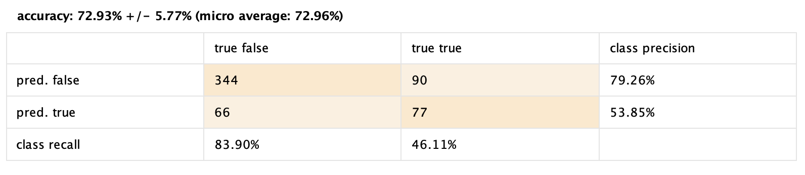
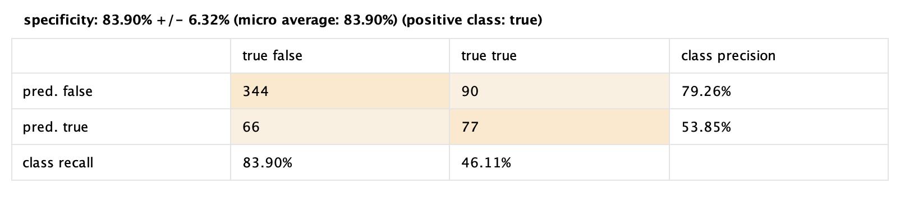
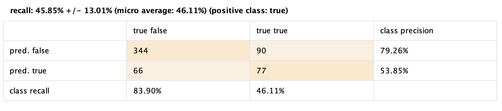
Random Forest
Los resultados del modelo Random Forest muestran una precisión general del 70.20%, con una sensibilidad (recall) del 12.61% y una especificidad del 93.66%. Estos resultados indican que si bien el modelo tiene una alta capacidad para identificar correctamente a las personas sanas (alta especificidad), su capacidad para detectar los casos positivos de enfermedad hepática (sensibilidad) es muy baja. En el contexto de las enfermedades hepáticas, donde es crucial identificar correctamente los casos positivos, el modelo Random Forest muestra una deficiencia significativa al no poder capturar adecuadamente estos casos, lo que podría limitar su eficacia en el diagnóstico oportuno de la enfermedad.
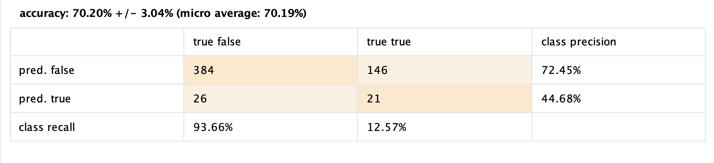
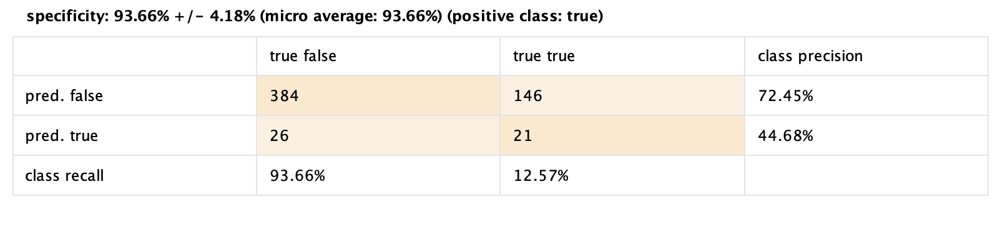
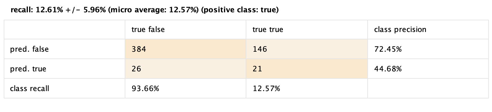
Regresión Logistica
Los resultados de la Regresión Logística muestran una precisión general del 72.28%, con una sensibilidad (recall) del 24.63% y una especificidad del 91.71%. Estos resultados indican que el modelo tiene una capacidad razonable para identificar correctamente a las personas sanas (alta especificidad), pero su capacidad para detectar los casos positivos de enfermedad hepática (sensibilidad) sigue siendo relativamente baja en comparación con la especificidad. Aunque mejora respecto al modelo Random Forest en la detección de casos positivos, aún presenta dificultades para capturar adecuadamente estos casos, lo que puede limitar su eficacia en el diagnóstico preciso de la enfermedad hepática.
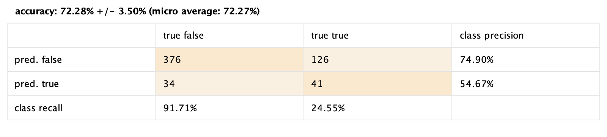
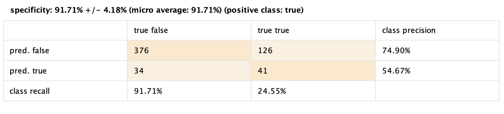
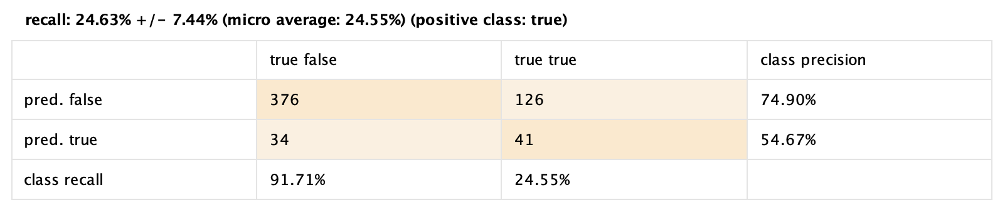
Bagging + KNN
Los resultados de Bagging + Regresión Logística muestran una precisión general del 67.59%. La sensibilidad (recall) es del 34.89%, con un área bajo la curva (AUC) de 0.68. El error de clasificación es del 32.41%, mientras que la precisión es del 42.13% y la medida F es del 37.70%. Estos resultados indican una mejora en la capacidad del modelo para detectar casos positivos en comparación con otros modelos previos, como la Regresión Logística y Random Forest. Aunque la precisión general es inferior en comparación con algunos modelos individuales, la sensibilidad mejorada sugiere una mejor capacidad para identificar casos positivos de enfermedad hepática. Sin embargo, aún existe margen para mejorar la precisión general del modelo.
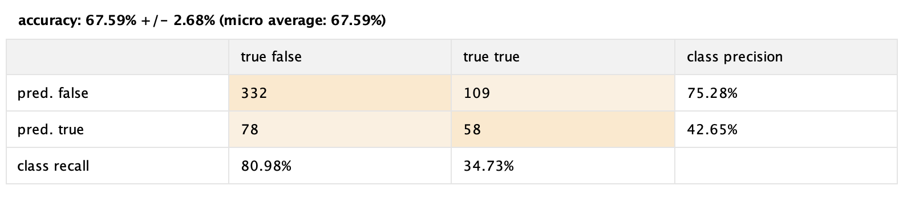
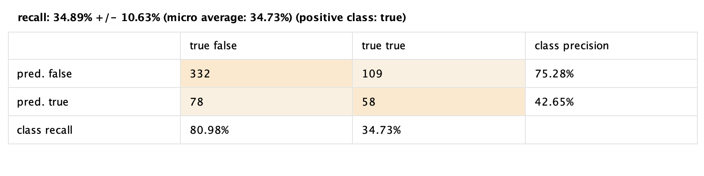
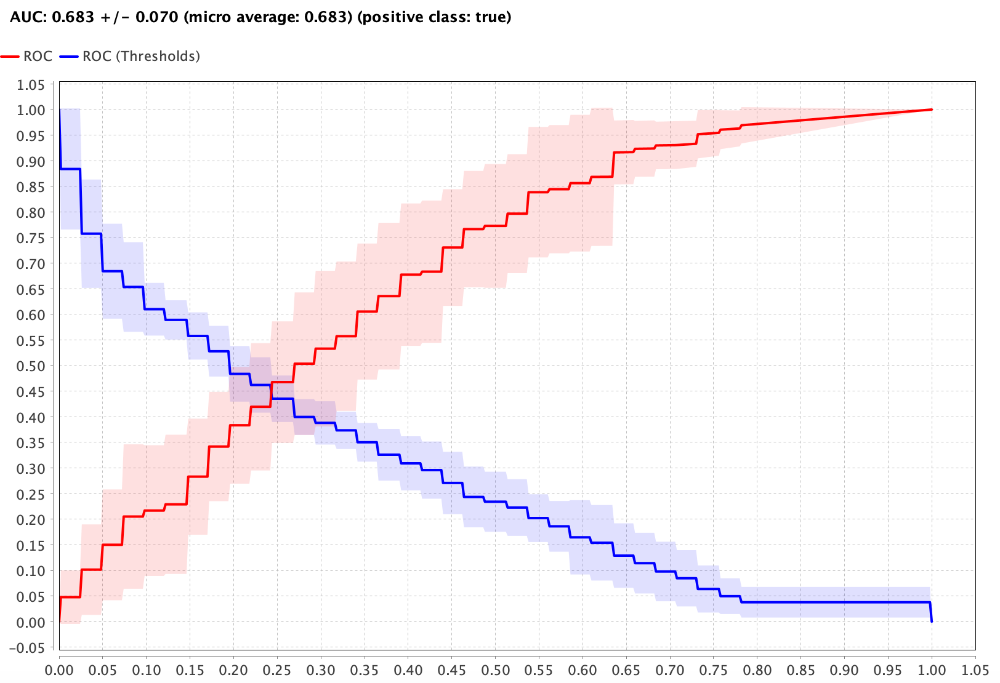
Conclusión
Tras analizar los distintos modelos para la detección de enfermedades hepáticas, se observa que, si bien ninguno alcanza un rendimiento óptimo, el modelo que destaca es el de Regresión Logística. Aunque presenta una precisión general del 72.28%, su capacidad para identificar correctamente los casos positivos (sensibilidad) sigue siendo relativamente baja, al igual que otros modelos evaluados. En este sentido, el siguiente paso podría enfocarse en mejorar la capacidad de los modelos para identificar de manera más efectiva los casos de enfermedad hepática. Esto podría lograrse mediante la optimización de los hiperparámetros de los modelos, la selección más precisa de atributos relevantes o considerando ensembles más complejos que combinen múltiples modelos para mejorar la sensibilidad sin sacrificar la especificidad. Además, la incorporación de más datos o la mejora de la calidad de los mismos podría potenciar la capacidad predictiva de los modelos.